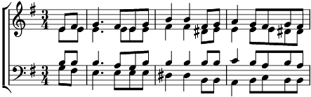

1. Un peu d'ombre et de lumière
Au partage entre chien et loup.
La forêt redevient pierre
Et le renard est jaloux
Moi je rêve à la fenêtre
Mon bateau s'en va vers vous
Et j'ai vu vieillir les hêtres.
Je veux vivre près de vous (bis)
2. On n'est pas dans les Cyclades
On est bien dans nos îles à nous.
Nous avons le vent maussade
Qui fait plier le genou.
Mais pour vous, ce soir d'octobre,
Je voudrais rester debout.
Que je sois perdu ou sobre
Je veux vivre près de vous (bis).
3. Je n'ai rien, ma poche est vide
Le brouillard rampe de partout.
Un passant passait, livide,
Il n'avait pas rendez-vous.
Soir d'octobre à ma fenêtre.
Faut-il être sage ou fou ?
Faut-il être ou ne pas être ?
Je veux vivre près de vous (bis).